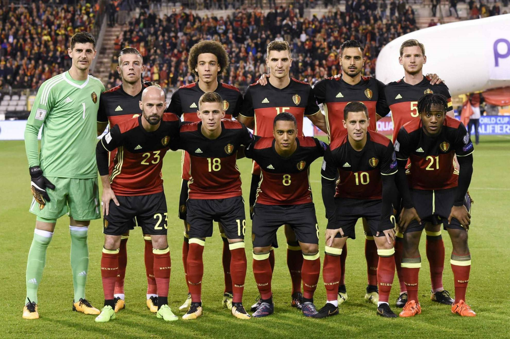

Ranking FIFA: 2° (marzo 2022).
¿Cómo se clasificó al Mundial? Ganó el Grupo E de las Eliminatorias europeas.
Rendimiento en 2021 (G-E-P): 11-3-3 (39 GF, 15 GC, +24).
Rendimiento en 2022: 3-2-1 (14 GF, 8 GC, +6).
Thibaut Courtois
Toby Alderweireld
Jason Denayer
Jan Vertonghen
Thomas Meunier
Youri Tielemans
Axel Witsel
Yannick Carrasco
Kevin De Bruyne
Eden Hazard
Romelu Lukaku.
Nacionalidad: español.
Edad: 49 años.
Contratado: 3 de agosto de 2016.
Récord en el cargo (G-E-P): 54-12-8.
Títulos en el cargo: Ninguno.
Victoria más notable: 2-1 sobre Brasil, cuartos de final del Mundial 2018.
1930 Uruguay 11°
1934 Italia 15°
1938 Francia 13°
1950 Brasil -
1954 Suiza 12°
1958 Suecia -
1962 Chile -
1966 Inglaterra -
1970 México 10°
1974 Alemania -
1978 Argentina -
1982 España 10°
1986 México 4°
1990 Italia 11°
1994 Estados Unidos 11°
1998 Francia 19°
2002 Corea y Japón 14°
2006 Alemania -
2010 Sudáfrica -
2014 Brasil 6°
2018 Rusia 3°
